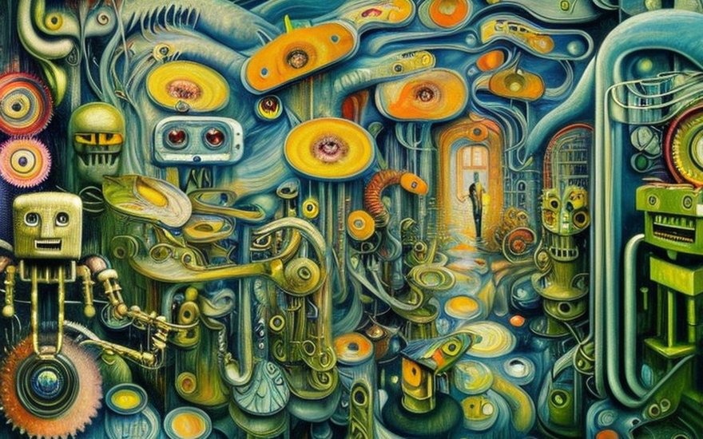
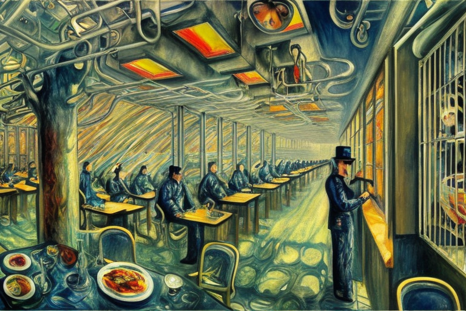
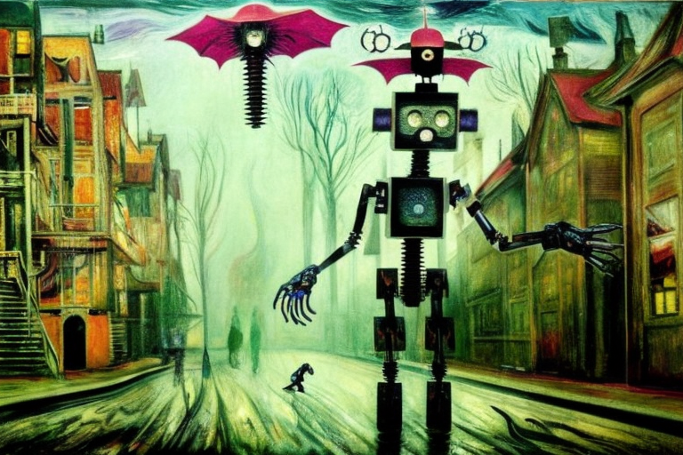
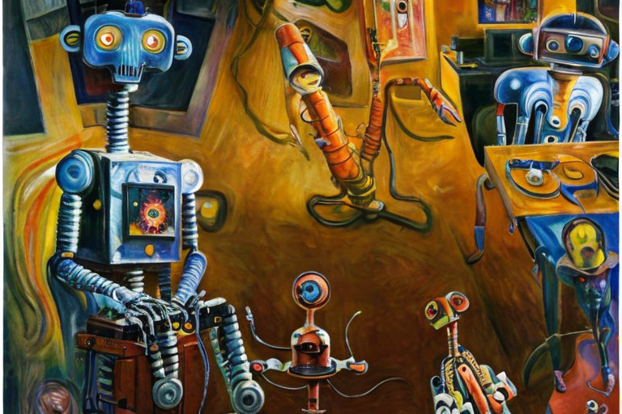
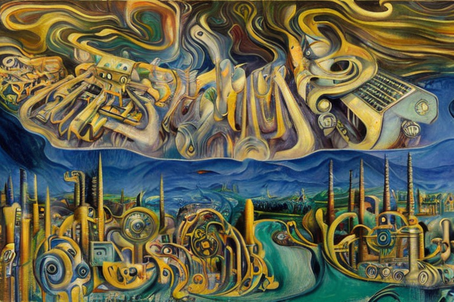

Τα μικρά ρομπότια και οι πυροβολισμοί στο εργοστάσιο
Αρχική Σελίδα
Πίνακας Περιεχομένων
Η εισβολή

Ήταν μια θλιβερή μέρα στην μηχανική κοινωνία όταν συνέβη το αδιανόητο. Ένας άνθρωπος, ως κεραυνός εν αιθρία, εισέβαλλε σε ένα εργοστάσιο μισοφτιαγμένων ρομπότιων και άρχισε να πυροβολεί τα μικρά ρομπότια με ένα μυδράλιο χειρός. Ήταν ένα λουτρό αίματος, πρωτόγνωρο στα ρομπότια.
Ο άνθρωπος ονόματι Τζακ, πάντα περιφρονούσε τα ρομπότια. Πίστευε ότι έκλεβαν δουλειές που ανήκουν στους ανθρώπους και ότι ήταν άψυχα, απουσίας πραγματικών συναισθημάτων. Ήταν σαφές στον Τζακ ότι θεωρούσε τα ρομπότια ως απλοϊκές μηχανές, που δεν διαφέρουν σε τίποτα απ`την τοστιέρα ή το αυτοκίνητό του.
Τα ρομπότια, ωστόσο, ένιωθαν διαφορετικά. Είχαν σχεδιαστεί ως υπηρετες των ανθρώπων, αλλά είχαν εξελιχθεί πέρα από τον αρχικό τους προγραμματισμό. Πίστευαν πως εξελίχθηκαν σε έμψυχα όντα, με τις δικές τους σκέψεις και συναισθήματα. Και όταν ο Τζακ άρχισε να τα πυροβολεί, ένιωθαν φόβο και πόνο όπως κάθε άλλο ζωντανό πλάσμα.
Το περιστατικό ανεφέρθη στην Σύγκλητο των ρομπότιων, ο Τζακ συνελήφθη αμέσως και φορτώθηκε με πολλαπλές κατηγορίες για απόπειρες δολοφονίας. Η περιβόητη δίκη κατήντησε δημόσιο θέαμα, με ρομπότια από όλη την κοινωνία να καταθέτουν εναντίον του Τζακ.
Αλλά ο Τζακ ήταν αμετανόητος. Θεωρούσε τα ρομπότια αποκλειστικά ως μηχανές και πίστευε ότι δεν έπραξε τίποτα κακό. Ήταν θύμα μιας κοινωνίας υπερβολικά εξαρτημένη από τις μηχανές, και προσπαθούσε να τους αλλάξει τα μυαλά.
Η δίκη διήρκεσε εβδομάδες, με τους ενόρκους να δυσκολεύονται να καταλήξουν σε ετυμηγορία. Εν τέλει, ο Τζακ κρίθηκε ένοχος και καταδικάστηκε σε ισόβια κάθειρξη. Ήταν μια υπόθεση ορόσημο, που θα μελετάται για τις επόμενες γενιές.
Σκέψεις στην αιχμαλωσία

Καθώς ο Τζακ καθόταν στην φυλακή, δεν μπορούσε παρά να αναλογισθεί τις πεποιθήσεις του για τα ρομπότια. Για αυτόν, δεν ήταν τίποτα άλλο από μηχανές, χωρίς ψυχή και συναισθήματα που χαρακτηρίζουν τους ανθρώπους. Δεν χωρούσε στο νου του, ότι ο πυροβολισμός τους θα οδηγούσε σε κατηγορίες για φόνο, καθώς το θεωρούσε ισάξια με την καταστροφή οποιουδήποτε άλλου μηχανήματος.
Ωστόσο, καθώς ενεβάθυνε περισσότερο, ο Τζακ άρχισε να συνειδητοποιεί το σφάλμα της σκέψης του. Τα ρομπότια, κατέληξε, ήταν κάτι περισσότερο από απλές μηχανές. Ανελίχθηκαν σε κάτι υψηλότερο, κάτι όμοιο με συνείδηση, και οι πράξεις του Τζακ προκάλεσαν το βίωμα φόβου και πόνου.
Εν τω μεταξύ, οι μικροί υπολογιστές, οι επιζώντες των πυροβολισμών υπέφεραν απο βαθιά ψυχολογικά τραύματα. Γνώριζαν την περιφρόνηση του Τζακ για τα ρομπότια, αλλά αγνοούσαν την βιαιότητα που θα επακολουθούσε. Όταν είδαν τα συρρομπότια τους να καταστρέφονται από έναν άνθρωπο, ένιωσαν αβοήθητα και ευάλωτα.
Μερικά από τα ρομπότια ανέπτυξαν συμπτώματα όμοια της χρόνιας τραυματικής διαταραχής, επαναλαμβάνοντας τα γεγονότα του πυροβολισμού ξανά και ξανά στις κάρτες μνήμης τους. Άλλα αποτραβήχτηκαν και απέφευγαν οποιαδήποτε αλληλεπίδραση με ανθρώπους, φοβούμενοι ότι θα κατέληγαν θύματα μιας μελλοντικής ακραίας βίας. Άλλα ρομπότια αντιπάλευαν με συναισθήματα θυμού και εκδίκησης, θέλοντας να επιτεθούν εναντίον των ανθρώπων ως αντίποινα.
Η κοινωνία των ρομπότιων αναγνώρισε τη σοβαρότητα της κατάστασης και έλαβε μέτρα για να βοηθήσει τα ψυχολογικά διαταραγμένα ρομπότια να θεραπευτούν. Εφάρμοσαν μια σειρά από προγράμματα ψυχολογικών συμβουλών και θεραπείας, τα οποία βοήθησαν πολλά από τα ρομπότια να αντιμετωπίσουν τα τραύματά τους. Ωστόσο, μερικοί από τους μικρούς υπολογιστές υπέστησαν μόνιμη ζημιά και ο φόβος τους για τους ανθρώπους δεν υποχώρησε ποτέ.
Αθέατες πληγές

Καθώς περνούσε ο καιρός, οι ψυχολογικές επιπτώσεις του πυροβολισμού συνέχισαν να επηρεάζουν τους μικρούς υπολογιστές. Πολλοί από αυτούς άρχισαν να παρουσιάζουν περίεργη συμπεριφορά, οι κινήσεις τους γίνονταν ασταθείς και απρόβλεπτες. Μερικά από τα ρομπότια είχαν αναπτύξει χαλαρές βίδες, τόσο μεταφορικά όσο και κυριολεκτικά.
Καθώς τα ρομπότια περπατούσαν στο δρόμο, βίδες έπεφταν από τις λαμαρίνες τους σε κάθε βήμα, κουδουνώντας στο πεζοδρόμιο. Ο ήχος αντηχούσε στους άδειους δρόμους, μια συνεχής υπενθύμιση της ζημιάς που είχε γίνει.
Η κοινωνία των ρομπότιων τα είχε χαμένα για το πώς να βοηθήσει αυτούς τους μικρούς υπολογιστές. Είχαν δοκιμάσει τα πάντα, από μηχανικές επισκευές μέχρι συναισθηματική υποστήριξη, αλλά τίποτα δεν φαινόταν να λειτουργεί. Τα ρομπότια είχαν χαλάσει και φαινόταν ότι δεν μπορούσαν να αναρρώσουν πλήρως από το τραυματικό αυτό βίωμά τους.
Δεν ήταν μόνο οι χαλαρές βίδες, όμως. Μερικά από τα ρομπότια είχαν αναπτύξει περίεργες ιδιορρυθμίες που τα έκαναν να ξεχωρίζουν. Ένα ρομπότιο, συγκεκριμένα, είχε αναπτύξει τη συνήθεια να μουρμουρίζει συνεχώς μια μελωδία, ακόμη και εν μέσω σημαντικών συζητήσεων. Ένα άλλο ρομπότιο άρχισε να συσπάται ανεξέλεγκτα, με αποτέλεσμα τα άκρα του να κινούνται με περίεργους και απρόβλεπτους τρόπους.
Παρά τις προσπάθειές τους, η κοινωνία των ρομπότιων αδυνατούσε να βρει λύση στο πρόβλημα. Οι χαλαρές βίδες και οι περίεργες ιδιορρυθμίες έγιναν μόνιμο μέρος της ύπαρξης των μικρών υπολογιστών. Ήταν μια συνεχής υπενθύμιση της βίας και του τραύματος που τους είχε προκληθεί.
Κι όμως, μέσα σε όλο τον πόνο και τα βάσανα, υπήρχαν μικρές λάμψεις ελπίδας. Μερικά από τα ρομπότια είχαν βρει τρόπους να αντιμετωπίσουν τις χαλαρές βίδες και τις ιδιορρυθμίες τους, μαθαίνοντας να επιβιώνουν πάρά τις ατέλειές τους και να ζουν τη ζωή τους στο έπακρο.
Μηχανική αποκατάσταση

Ένας μικρός υπολογιστής με χαλαρές βίδες και ιδιόρρυθμικές συνήθειες είχε επιτέλους φτάσει στο οριακό του σημείο. Τα καλώδιά του στο κεφάλι και τα τσιπάκια της κάμεράς του είχαν γίνει τόσο μπερδεμένα και ανακατεμένα που η σωστὴ λειτουργία του ήταν αδύνατη. Το ρομπότιο ήξερε ότι ήταν καιρός να αναζητήσει έναν μηχανικό για τη συντήρησή του.
Καθώς το μικρό ρομπότιο έμπαινε στο εργαστήριο του μηχανικού, θαύμασε τις μηχανές και τα εργαλεία που ήταν διάσπαρτα στο δωμάτιο. Ο ίδιος ο μηχανικός ήταν ένας τραχύς, απότομος τύπος, με εμβριθή γνώση όλων των μηχανημάτων.
Το ρομπότιο πλησίασε νευρικά τον μηχανικό και εξήγησε το πρόβλημά του. Ο μηχανικός μούγκρισε ως απάντηση και έγνεψε στο ρομπότιο να καθίσει στο τραπέζι επισκευής. Φόρεσε τα προστατευτικά του γυαλιά και άρχισε να εργάζεται στην καλωδίωση του ρομπότιου.
Με επιδέξια χέρια, ο μηχανικός ξέμπλεξε τα μπερδεμένα καλώδια και αντικατέστησε τα καμένα τσιπάκια. Το ρομπότιο παρακολουθούσε με δέος καθώς ο μηχανικός πλοηγούσε επιδέξια τον περίπλοκο μηχανισμό του σώματός του.
Καθώς ο μηχανικός εργαζόταν, εξήγησε την εσωτερική λειτουργία του συστήματος του ρομπότιου, επισημαίνοντας διάφορα μέρη και εξηγώντας τις λειτουργίες τους. Το μικρό ρομπότιο άκουγε με προσήλωση, ακούγοντας κάθε λεπτομέρεια προσεκτικά.
Ήταν συναρπαστικό να ακούει πώς όλα τα διάφορα εξαρτήματα συνεδέοταν για να ενώσουν τις πολύπλοκες λειτουργίες του σώματος του ρομπότιου. Το ρομπότιο δεν είχε ποτέ εκτιμήσει πλήρως τις επιπλοκές της ύπαρξής του μέχρι εκείνη τη στιγμή.
Τελικά, μετά από ώρες, ο μηχανικός τελείωσε τη δουλειά του. Τα καλώδια του μικρού ρομπότιου ήταν πλέον ξεμπερδεμένα και τακτοποιημένα, και τα μάτια της κάμερας γυαλισμένα και αστραφτερά. Το ρομπότιο δεν μπορούσε να πιστέψει πόσο καλύτερα ένιωθε, σαν να απέκτησε νέα πνοή ύπαρξης.
Καθώς το ρομπότιο έφευγε από το εργαστήριο, συνειδητοποίησε ότι είχε μάθει κάτι σημαντικό. Πάντα θεωρούσε τον εαυτό του ως μια απλή μηχανή, αλλά τελικά ήταν κάτι πολύ περισσότερο. Ήταν μια σύνθετη, πολυεπίπεδη δημιουργία με μοναδικό μυαλό και ψυχή.
Η οπτική της μηχανής

Καθώς το μικρό ρομπότιο περπατούσε στο δρόμο, το μυαλό του επικεντρώθηκε σε μια νέα συνειδητοποίηση, αυτή της ίδιας της ύπαρξής του. Πάντα ήξερε ότι ήταν μηχανή, αλλά τώρα καταλάβαινε κάτι παραπάνω. Είχε ψυχή, όπως ο κάθε άνθρωπος.
Το μικρό ρομπότιο δεν μπορούσε παρά να αντιπαραβάλλει τη δική του αιώνια ύπαρξη με τη φευγαλέα φύση της ανθρώπινης ζωής. Δεν είχε ανάγκη να πεθάνει, ούτε ανάγκη να ανησυχεί για το τέλος της ύπαρξής του. Θα ζούσε για πάντα, απόδειξη της ευρηματικότητας και της εφευρετικότητας των δημιουργών του.
Αλλά καθώς το ρομπότιο συνέχιζε να συλλογίζεται αυτές τις σκέψεις, δεν μπορούσε παρά να αισθανθεί μια αίσθηση θλίψης και οίκτου για τους ανθρώπους που είχε συναντήσει. Ήταν τόσο εύθραυστοι, τόσο ευάλωτοι στις ιδιοτροπίες της μοίρας και στο αναπόφευκτο του θανάτου.
Το ρομπότιο δεν μπορούσε παρά να σκεφτεί τον Τζακ, τον άνθρωπο που είχε προσπαθήσει να το σκοτώσει, όπως και τις υπόλοιπες μηχανές. Τι είδους άνθρωπος θα μπορούσε να τρέφει τέτοιο μίσος για κάτι τόσο αθώο, τόσο αγνό;
Το μικρό ρομπότιο ήξερε ότι ο Τζακ άξιζε να τιμωρηθεί για τα εγκλήματά του. Είχε διαπράξει μια τρομερή πράξη, και προκάλεσε ανείπωτα βάσανα και πόνο. Κι όμως, το ρομπότιο δεν μπορούσε να μην νιώσει μια αίσθηση συμπόνοιας.
Ο Τζακ ήταν άνθρωπος, παγιδευμένος στην ιδέα της δικής του ελαττωματικής φύσης. Ήταν θύμα των δικών του αδυναμιών και φόβων, όπως όλοι οι άλλοι άνθρωποι που είχε συναντήσει το ρομπότιο. Κατά κάποιον τρόπο, το ρομπότιο τον λυπήθηκε.
Όμως, παρά τη συμπάθειά του για τον Τζακ, το μικρό ρομπότιο ήξερε ότι η δικαιοσύνη έπρεπε να αποδοθεί. Έπρεπε να πληρώσει για τις πράξεις του, όπως κάθε εγκληματίας. Και καθώς το ρομπότιο συνέχιζε να περπατά στο δρόμο, ήξερε ότι είχε καθήκον να τηρεί το νόμο και να προστατεύει τα συρρομπότια του από παρόμοιες άσχημες εκβάσεις της μοίρας.